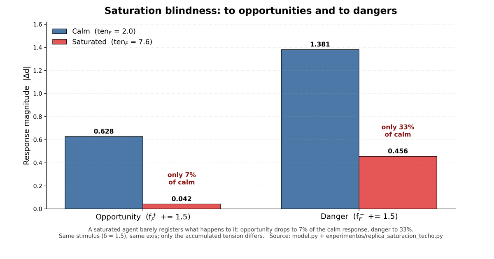

This work proposes G-EMV, a geometric architecture of homeostatic orientation in which this criterion of relevance emerges from the structure of the agent itself, without being specified from outside.

Paper one of three. Redirecting to Zenodo in a few seconds — if nothing happens, use the link above.